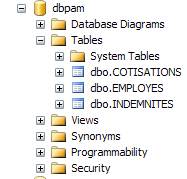
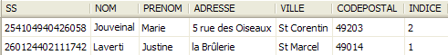
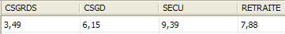
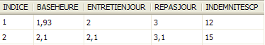
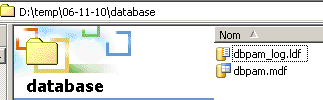

3. Die Fallstudie
Wir möchten eine .NET-Anwendung schreiben, mit der ein Benutzer Simulationen zur Berechnung der Vergütung der Tagesmütter des Vereins „Maison de la petite enfance“ einer Gemeinde durchführen kann. Wir werden uns sowohl mit der Struktur des DotNet-Codes der Anwendung als auch mit dem Code selbst befassen.
3.1. Die Datenbank „ “
Die statischen Daten, die für die Erstellung der Gehaltsabrechnung benötigt werden, befinden sich in einer SQL Server Express-Datenbank mit dem Namen dbpam (pam = Paie Assistante Maternelle). Diese Datenbank hat einen Administrator namens sa mit dem Passwort msde.
 |
Die Datenbank enthält drei Tabellen: EMPLOYES, COTISATIONS und INDEMNITES, deren Struktur wie folgt aussieht:
Table EMPLOYES : rassemble des informations sur les différentes assistantes maternelles
Struktur:
 |
|
Der Inhalt könnte wie folgt aussehen:
 |
Table COTISATIONS : rassemble les taux des cotisations sociales prélevées sur le salaire
Struktur:
 |
Sein Inhalt könnte wie folgt lauten:
 |
Die Sozialversicherungsbeiträge sind unabhängig vom Arbeitnehmer. Die vorstehende Tabelle enthält nur eine Zeile.
Table INDEMNITES : rassemble les différentes indemnités dépendant de l'indice de l'employé
 |
|
Der Inhalt könnte wie folgt lauten:
 |
Es ist zu beachten, dass die Zulagen von einer Tagesmutter zur anderen variieren können. Sie sind nämlich über den Gehaltsindex der jeweiligen Tagesmutter mit dieser verknüpft. So hat Frau Marie Jouveinal, die einen Gehaltsindex von 2 hat (Tabelle EMPLOYES), einen Stundenlohn von 2,1 Euro (Tabelle INDEMNITES).
Die Beziehungen zwischen den drei Tabellen sind wie folgt:
 |
Es besteht eine Fremdschlüsselbeziehung zwischen der Spalte EMPLOYES (INDICE) und der Spalte INDEMNITES (INDICE).
Die so erstellte Datenbank [dbpam] erzeugt zwei Dateien im Ordner von SQL Server Express:
 |
Die Dateien „ “ aus dem Ordner „[dbpam.mdf, dbpam_log.ldf]“ können auf einen anderen Rechner übertragen und dort erneut mit dem Server Express „SGBD“ und „SQL“ dieses Rechners verknüpft werden. Gehen Sie dazu wie folgt vor:
- Die Dateien von BD und [dbpam] werden in einen Ordner kopiert
 |
- Starten Sie den SQL Server Express
- mit dem Client „SQL Server Management Studio Express“ gestartet und die Datei „[dbpam.mdf]“ an „SGBD“ angehängt:
 |
 |
- Rechtsklick auf [Databases] / Anhängen
- Auswahl der Datei „[dbpam.mdf]“ über eine Schaltfläche „[Add]“ (nicht abgebildet)
- Aus der angehängten Datei entsteht eine Datei mit dem Namen BD, die noch nicht vorhanden sein darf. Hier wurde im Feld [Attach As] der neuen Datei BD der Name [dbpam2] zugewiesen.
- Man sieht die neue BD und ihre Tabellen
Diese Technik des Anhängens einer BD ist nützlich, um eine BD von einem Arbeitsplatz zu einem anderen zu übertragen, und wir werden sie hier gelegentlich anwenden.
3.2. Berechnungsmethode für das Gehalt einer Tagesmutter
Wir stellen nun die Berechnungsmethode für das Monatsgehalt einer Tagesmutter vor. Als Beispiel nehmen wir das Gehalt von Frau Marie Jouveinal, die im Abrechnungsmonat 150 Stunden an 20 Tagen gearbeitet hat.
Folgende Faktoren werden berücksichtigt: | | |
Das Grundgehalt der Tagesmutter ergibt sich aus folgender Formel: | ||
Von diesem Grundgehalt sind bestimmte Sozialbeiträge abzuziehen: | | |
Gesamtsumme der Sozialbeiträge: | ||
Darüber hinaus hat die Tagesmutter für jeden gearbeiteten Tag Anspruch auf eine Aufwandsentschädigung sowie eine Verpflegungszulage. In diesem Zusammenhang erhält sie folgende Zulagen: | | |
Insgesamt ergibt sich folgender Nettolohn, der an die Tagesmutter zu zahlen ist: |
3.3. Mahnungen ADO.NET
Die Anwendung zur Lohn- und Gehaltsabrechnung benötigt die Informationen aus der Datenbank [dbpam]. Ihre Architektur sieht wie folgt aus:
 |
- In [1] stellt der Benutzer eine Anfrage
- in [2] verarbeitet die Lohnabrechnungsanwendung diese Anfrage.
- Möglicherweise benötigt sie dabei Daten aus der Datenbank. Sie sendet daher eine Abfrage an den Provider ADO.NET, der von SGBD verwendet wird, der wiederum von [4] genutzt wird.
- Dieser greift auf die Datenbank [5] zu und übermittelt die Ergebnisse an den Provider ADO.NET, der sie wiederum an die Anwendung weiterleitet
- Diese verarbeitet die Ergebnisse und erstellt eine Antwort [5] für den Benutzer
Wir gehen nun auf die wichtigsten Schnittstellen ein, die ein Anbieter ADO.NET seinen Kunden [3] bereitstellt.
Im verbundenen Modus führt die Anwendung folgende Schritte aus:
- eine Verbindung zur Datenquelle herstellen
- arbeitet mit der Datenquelle im Lese-/Schreibmodus
- schließt die Verbindung
Drei ADO.NET-Schnittstellen sind hauptsächlich von diesen Vorgängen betroffen:
- IDbConnection, die die Eigenschaften und Methoden der Verbindung kapselt.
- IDbCommand, das die Eigenschaften und Methoden des ausgeführten Befehls SQL kapselt.
- IDataReader, das die Eigenschaften und Methoden des Ergebnisses eines SQL-Select-Befehls kapselt.
Die Schnittstelle IDbConnection
Dient zur Verwaltung der Verbindung zur Datenbank. Zu den Methoden M und Eigenschaften P dieser Schnittstelle gehören unter anderem die folgenden:
Name | Typ | Rolle |
P | Verbindungszeichenfolge zur Datenbank. Sie enthält alle Parameter, die für den Aufbau einer Verbindung zu einer bestimmten Datenbank erforderlich sind. | |
M | Stellt die Verbindung zu der durch ConnectionString definierten Datenbank her | |
M | schließt die Verbindung | |
M | startet eine Transaktion. | |
P | Verbindungsstatus: ConnectionState.Closed, ConnectionState.Open, ConnectionState.Connecting, ConnectionState.Executing, ConnectionState.Fetching, ConnectionState.Broken |
Wenn Connection eine Klasse ist, die die Schnittstelle IDbConnection implementiert, kann die Verbindung wie folgt hergestellt werden:
Die Schnittstelle IDbCommand
Dient zur Ausführung eines Befehls SQL oder einer gespeicherten Prozedur. Zu den Methoden M und Eigenschaften P dieser Schnittstelle gehören unter anderem die folgenden:
Name | Typ | Rolle |
P | gibt an, was ausgeführt werden soll – bezieht seine Werte aus einer Aufzählung: - CommandType.Text: Führt den Befehl SQL aus, der in der Eigenschaft CommandText definiert ist. Dies ist der Standardwert. - CommandType.StoredProcedure: Führt eine in der Datenbank gespeicherte Prozedur aus | |
P | - der Text des Befehls SQL, der ausgeführt werden soll, wenn CommandType = CommandType.Text - Name der auszuführenden gespeicherten Prozedur, wenn CommandType = CommandType.StoredProcedure | |
P | die Verbindung IDbConnection, die zur Ausführung des Auftrags SQL verwendet werden soll | |
P | die Transaktion IDbTransaction, in der der Auftrag SQL ausgeführt werden soll | |
P | die Liste der Parameter eines konfigurierten Befehls SQL. Der Befehl „update articles set price=price*1.1 where id=@id“ hat den Parameter @id. | |
M | Um einen Befehl SQL Select auszuführen. Man erhält ein Objekt IDataReader, das das Ergebnis von Select darstellt. | |
M | um einen Befehl SQL (Update, Insert, Delete) auszuführen. Man erhält die Anzahl der von der Operation betroffenen Zeilen (aktualisiert, eingefügt, gelöscht). | |
M | um einen Befehl SQL Select auszuführen, der nur ein einziges Ergebnis liefert, wie in: select count(*) from articles. | |
M | um die Parameter IDbParameter für einen bereits parametrierten Auftrag SQL zu erstellen. | |
M | ermöglicht die Optimierung der Ausführung einer parametrisierten Abfrage, wenn diese mehrfach mit unterschiedlichen Parametern ausgeführt wird. |
Wenn Command eine Klasse ist, die die Schnittstelle IDbCommand implementiert, sieht die Ausführung eines Befehls SQL ohne Transaktion wie folgt aus:
Die Schnittstelle IDataReader
dient dazu, die Ergebnisse eines Befehls SQL Select zu kapseln. Ein Objekt vom Typ IDataReader stellt eine Tabelle mit Zeilen und Spalten dar, die nacheinander ausgewertet werden: zuerst die erste Zeile, dann die zweite, … Zu den Methoden M und Eigenschaften P dieser Schnittstelle gehören unter anderem die folgenden:
Name | Typ | Rolle |
P | Anzahl der Spalten in der Tabelle IDataReader | |
M | GetName(i) gibt den Namen der Spalte Nr. i der Tabelle IDataReader zurück. | |
P | Item[i] steht für die Spalte Nr. i der aktuellen Zeile der Tabelle IDataReader. | |
M | springt zur nächsten Zeile der Tabelle IDataReader. Gibt den Booleschen Wert True zurück, wenn das Auslesen erfolgreich war, andernfalls False. | |
M | schließt die Tabelle IDataReader. | |
M | GetBoolean(i): Gibt den booleschen Wert der Spalte Nr. i der aktuellen Zeile der Tabelle IDataReader zurück. Die anderen analogen Methoden lauten wie folgt: GetDateTime, GetDecimal, GetDouble, GetFloat, GetInt16, GetInt32, GetInt64, GetString. | |
M | Getvalue(i): Gibt den Wert der Spalte Nr. i der aktuellen Zeile der Tabelle IDataReader als Typ object zurück. | |
M | IsDBNull(i) gibt True zurück, wenn die Spalte Nr. i der aktuellen Zeile der Tabelle IDataReader keinen Wert enthält, was durch den Wert SQL NULL symbolisiert wird. |
Die Auswertung eines Objekts IDataReader sieht häufig wie folgt aus: